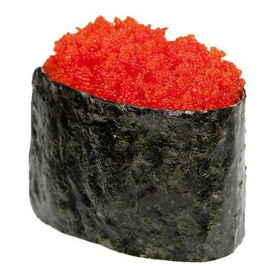

Суши

|
ЧуккаДиетические суши, приготовленные из одноименного салата, риса, кунжута и водорослей нори. |

|
МагуроКлассические суши. Готовяться из тунца и риса. |
|  |
ТобикоИкра летучей рыбы, рис, нори. |